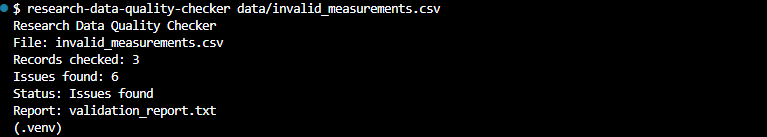
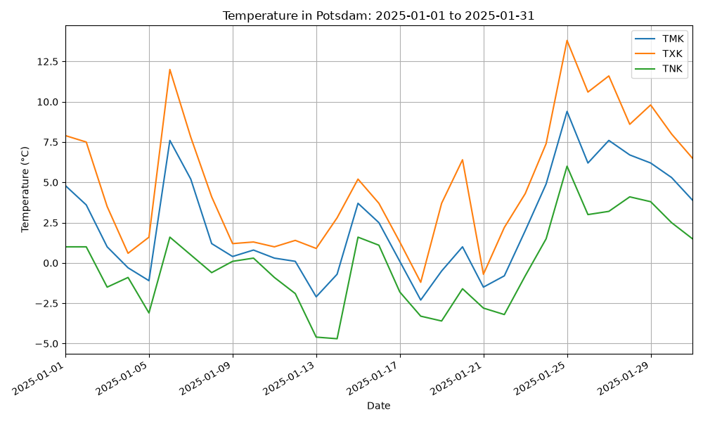
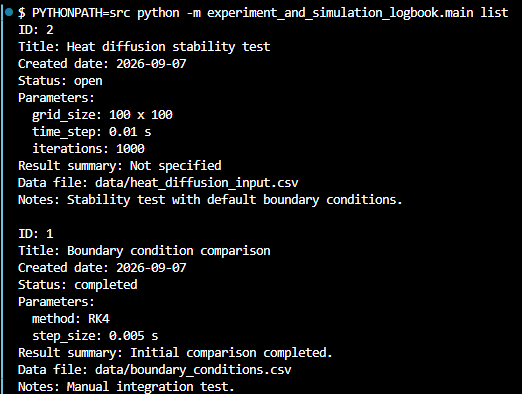

Data Quality
Research Data Quality Checker
A command-line application for validating structured research and measurement data against a defined CSV schema and documented validation rules.
- Python
- CSV
- pytest
- Ruff

Research-Oriented Software Development
This portfolio presents three completed software projects covering scientific data processing, data quality assurance, and the structured documentation of experiments and simulation runs.
The projects focus on Research Software Engineering, reliable and traceable software development, and the practical application of technical skills using Python and modern development tools.
View ProjectsSelected Work
Three portfolio projects demonstrate different aspects of research-oriented software development and build on one another in scope and technical focus.
Data Quality
A command-line application for validating structured research and measurement data against a defined CSV schema and documented validation rules.

Data Analysis & Visualization
A Python application for cleaning, filtering, analyzing, visualizing, and exporting historical weather data from the German Weather Service.

Application Logic & Persistence
A local command-line application for structured documentation, filtering, persistent storage, and export of experiment and simulation run records.
